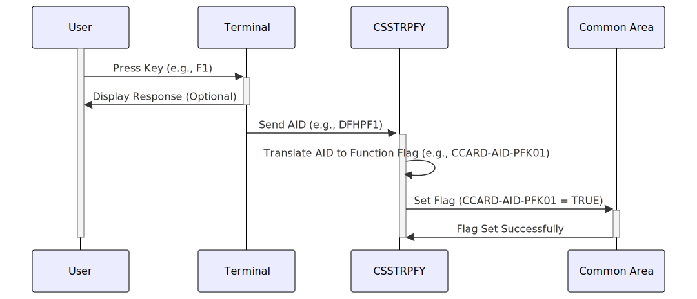

Gerado em: 1º de Outubro de 2024
Título do Documento: Tradutor de Ações do Usuário CICS
Descrição Resumida:
Este programa traduz ações do usuário, como teclas pressionadas em um terminal, em comandos específicos dentro de um aplicativo CICS. Ele age como um decodificador, convertendo a entrada do usuário em instruções que o aplicativo pode entender.
Histórias do Usuário:
Como desenvolvedor de aplicativos, preciso de uma maneira de interpretar consistentemente as ações do usuário em diferentes tipos de terminais para que o aplicativo se comporte de forma previsível para todos os usuários.
Épico Relacionado:
9 - Utilitários do Sistema
Requisitos Funcionais:
- Capturar Entrada do Usuário:
- O programa deve capturar o Identificador de Atenção (AID) gerado pela ação do usuário no terminal. Este AID representa uma tecla específica pressionada ou outro evento de entrada.
- Traduzir AID para Função do Programa:
- O programa deve ter um mapeamento predefinido entre AIDs e funções de programa correspondentes.
- Por exemplo:
DFHENTER (tecla Enter) mapeia para CCARD-AID-ENTERDFHCLEAR (tecla Clear) mapeia para CCARD-AID-CLEARDFHPA1 (tecla PA1) mapeia para CCARD-AID-PA1DFHPF1 (tecla F1) mapeia para CCARD-AID-PFK01- e assim por diante para outras teclas de função.
- Definir Flags na Área Comum:
- Em vez de executar diretamente a função do programa, o programa deve definir um sinalizador correspondente em uma área comum designada (memória compartilhada).
- Este sinalizador indica a ação pretendida do usuário para outras partes do aplicativo CICS.
Requisitos Não Funcionais:
- Desempenho: O processo de tradução deve ser muito rápido, pois faz parte da interação do usuário. Quaisquer atrasos serão perceptíveis.
- Confiabilidade: O mapeamento entre AIDs e funções do programa deve ser preciso e consistente.
- Manutenibilidade: O código deve ser estruturado para adicionar facilmente novos AIDs ou modificar mapeamentos existentes conforme o aplicativo evolui.
Critérios de Aceitação:
- O programa captura com sucesso AIDs gerados por ações do usuário no terminal.
- O programa traduz corretamente os AIDs capturados em seus sinalizadores de função de programa correspondentes.
- O programa define os sinalizadores corretos na área comum sem erros.
Melhorias de Código:
- Tratamento de Erros:
- Implemente verificações para AIDs inesperados. Se um AID não reconhecido for encontrado, registre o erro e, potencialmente, exiba uma mensagem genérica para o usuário.
- Mapeamento Centralizado:
- Considere usar uma tabela ou arquivo de configuração para armazenar o mapeamento AID-para-função em vez de codificá-lo na instrução
EVALUATE. Isso tornará mais fácil atualizar os mapeamentos sem modificar o código do programa.
- Documentação:
- Documente claramente o propósito do programa, o mapeamento AID-para-função e a localização e propósito dos sinalizadores na área comum.
Melhorias de Segurança:
- Controle de Acesso:
- Garanta que apenas usuários ou programas autorizados tenham acesso para modificar a área comum onde os sinalizadores são armazenados.
- Validação de Entrada:
- Limpe e valide toda a entrada recebida do terminal para evitar ataques de injeção, embora os AIDs sejam normalmente gerados pelo sistema.
Diagrama Conceitual:

–Made by “Smart Engineering” (by Compass.UOL)–